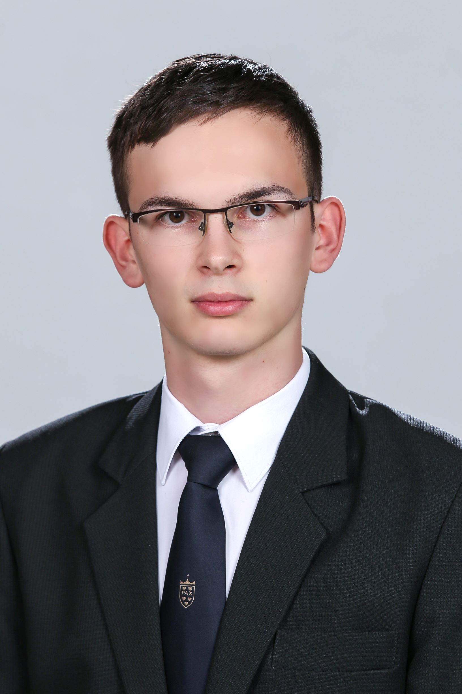

Seregélyes László, BME Gépészmérnöki Karának hallgatója vagyok. Gimnáziumi tanulmányaim a Pannonhalmi Bencés Gimnáziumban végeztem el.
Gyermekkorom óta érdeklődöm a különböző gépek iránt, majd a gimnáziumi tanulmányaim során kaptam olyan matematika oktatást ami megalapozta a döntésem, hogy gépészetet tanuljak egyetemen. Szintén itt kezdtem el ismerkedni az irányítástechnika alapjaival.
